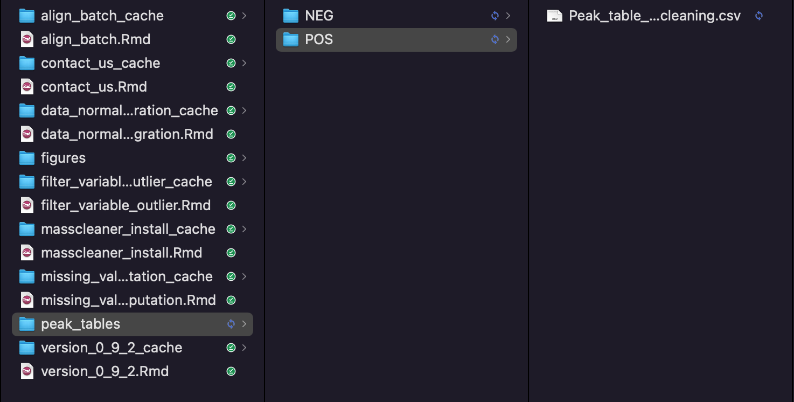
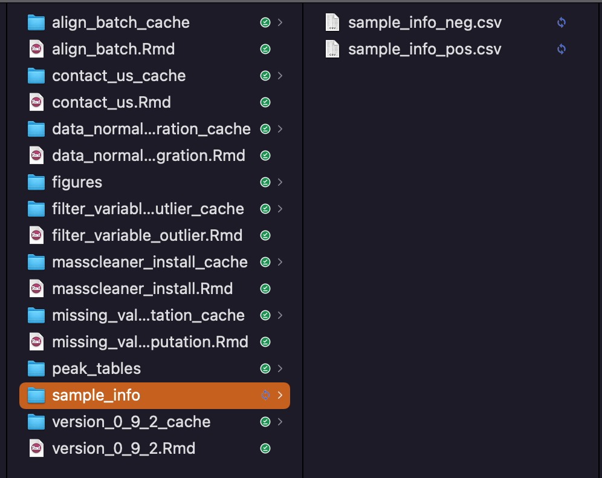
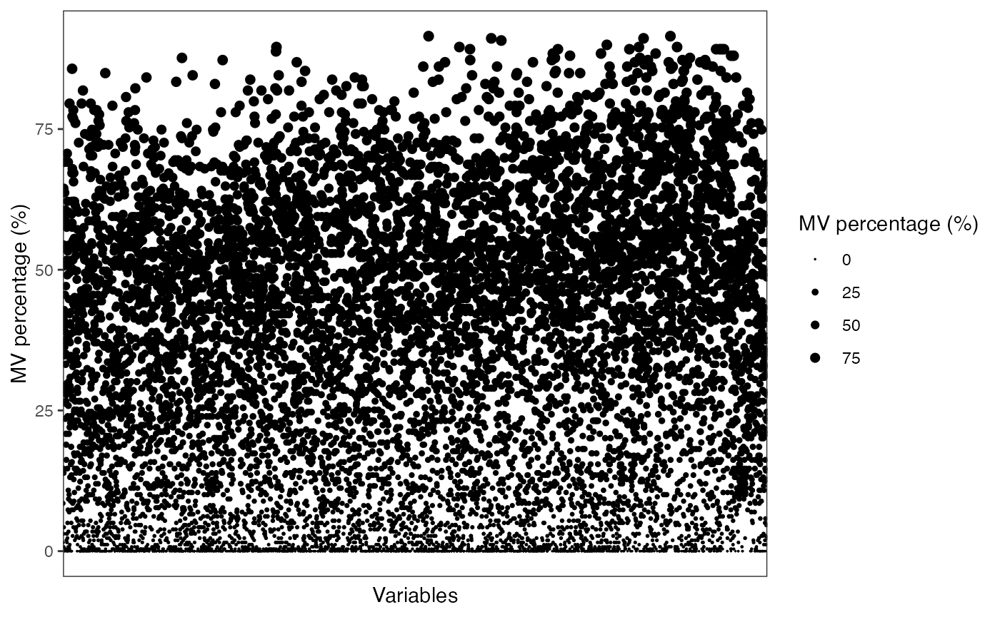
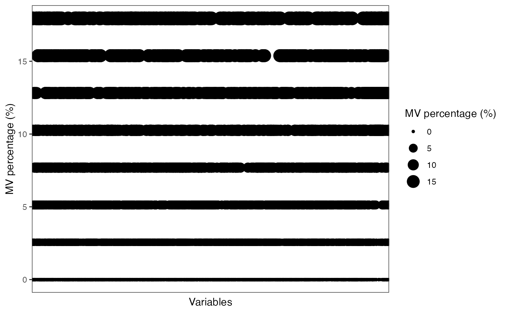
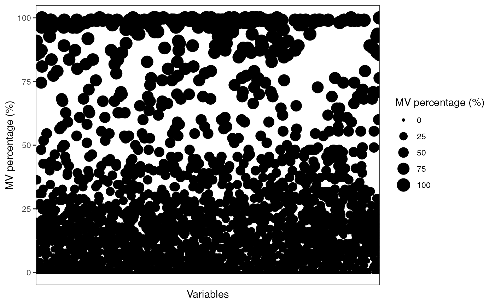
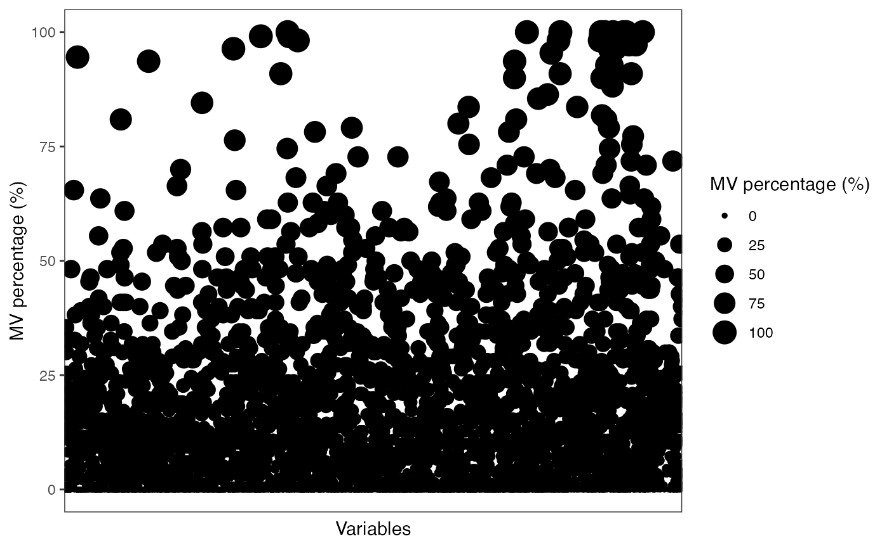
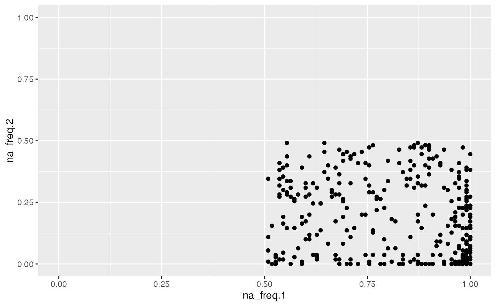
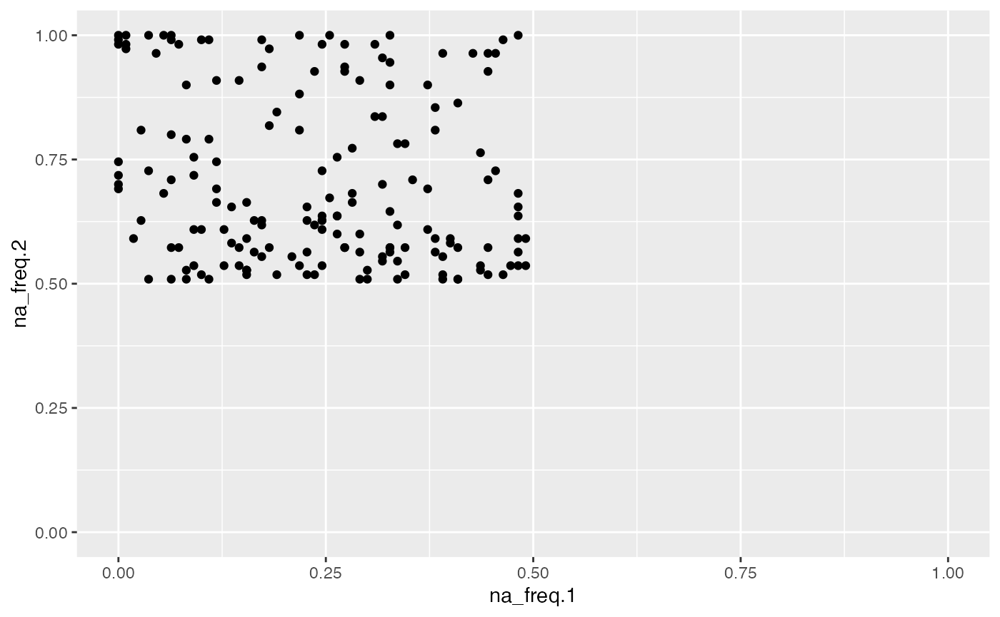
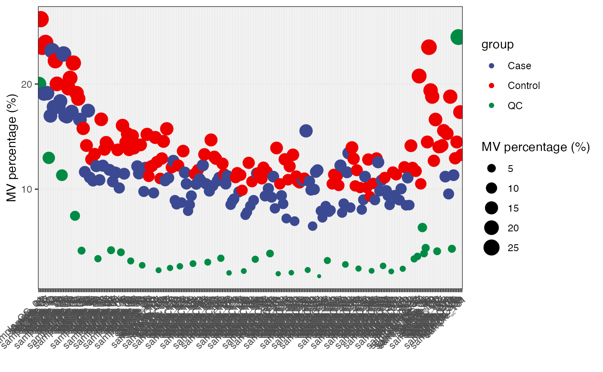

vignettes/filter_variable_outlier.Rmd
filter_variable_outlier.RmdWe can use masscleaner to remove noisy features and outlier samples.
First, we need to prepare samples for masscleaner.
Download the demo data: peak tables and uncompress.

Download the demo data: sample information and uncompress.

Here we only use the positive mode as an example.
peak_table_pos = readr::read_csv("peak_tables/POS/Peak_table_for_cleaning.csv") %>%
as.data.frame()
#> Rows: 10149 Columns: 262
#> ── Column specification ────────────────────────────────────────────────────────
#> Delimiter: ","
#> chr (1): variable_id
#> dbl (261): mz, rt, sample_06, sample_103, sample_11, sample_112, sample_117,...
#>
#> ℹ Use `spec()` to retrieve the full column specification for this data.
#> ℹ Specify the column types or set `show_col_types = FALSE` to quiet this message.
sample_info_pos = readr::read_csv("sample_info/sample_info_pos.csv") %>%
as.data.frame()
#> Rows: 259 Columns: 6
#> ── Column specification ────────────────────────────────────────────────────────
#> Delimiter: ","
#> chr (4): sample_id, class, subject_id, group
#> dbl (2): injection.order, batch
#>
#> ℹ Use `spec()` to retrieve the full column specification for this data.
#> ℹ Specify the column types or set `show_col_types = FALSE` to quiet this message.
expression_data_pos <-
peak_table_pos %>%
dplyr::select(-c(variable_id, mz, rt))
variable_info_pos <-
peak_table_pos %>%
dplyr::select(c(variable_id, mz, rt))
rownames(expression_data_pos) = variable_info_pos$variable_id
dim(expression_data_pos)
#> [1] 10149 259
dim(sample_info_pos)
#> [1] 259 6
colnames(expression_data_pos) == sample_info_pos$sample_id
#> [1] FALSE FALSE FALSE FALSE FALSE FALSE FALSE FALSE FALSE FALSE FALSE FALSE
#> [13] FALSE FALSE FALSE FALSE FALSE FALSE FALSE FALSE FALSE FALSE FALSE FALSE
#> [25] FALSE FALSE FALSE FALSE FALSE FALSE FALSE FALSE FALSE FALSE FALSE FALSE
#> [37] FALSE FALSE FALSE FALSE FALSE FALSE FALSE FALSE FALSE FALSE FALSE FALSE
#> [49] FALSE FALSE FALSE FALSE FALSE FALSE FALSE FALSE FALSE FALSE FALSE FALSE
#> [61] FALSE FALSE FALSE FALSE FALSE FALSE FALSE FALSE FALSE FALSE FALSE FALSE
#> [73] FALSE FALSE FALSE FALSE FALSE FALSE FALSE FALSE FALSE FALSE FALSE FALSE
#> [85] FALSE FALSE FALSE FALSE FALSE FALSE FALSE FALSE FALSE FALSE FALSE FALSE
#> [97] FALSE FALSE FALSE FALSE FALSE FALSE FALSE FALSE FALSE FALSE FALSE FALSE
#> [109] FALSE FALSE FALSE FALSE FALSE FALSE FALSE FALSE FALSE FALSE FALSE FALSE
#> [121] FALSE FALSE FALSE FALSE FALSE FALSE FALSE FALSE FALSE FALSE FALSE FALSE
#> [133] FALSE FALSE FALSE FALSE FALSE FALSE FALSE FALSE FALSE FALSE FALSE FALSE
#> [145] FALSE FALSE FALSE FALSE FALSE FALSE FALSE FALSE FALSE FALSE FALSE FALSE
#> [157] FALSE FALSE FALSE FALSE FALSE FALSE TRUE FALSE FALSE FALSE FALSE FALSE
#> [169] FALSE FALSE FALSE FALSE FALSE FALSE FALSE FALSE FALSE FALSE FALSE FALSE
#> [181] FALSE FALSE FALSE FALSE FALSE FALSE FALSE FALSE FALSE FALSE FALSE FALSE
#> [193] FALSE FALSE FALSE FALSE FALSE FALSE FALSE FALSE FALSE FALSE FALSE FALSE
#> [205] FALSE FALSE FALSE FALSE FALSE FALSE FALSE FALSE FALSE FALSE FALSE FALSE
#> [217] FALSE FALSE FALSE FALSE FALSE FALSE FALSE FALSE FALSE FALSE FALSE FALSE
#> [229] FALSE FALSE FALSE FALSE FALSE FALSE FALSE FALSE FALSE FALSE FALSE FALSE
#> [241] FALSE FALSE FALSE FALSE FALSE FALSE FALSE FALSE FALSE FALSE FALSE FALSE
#> [253] FALSE FALSE FALSE FALSE FALSE FALSE FALSE
expression_data_pos =
expression_data_pos[,sample_info_pos$sample_id]
sum(colnames(expression_data_pos) == sample_info_pos$sample_id)
#> [1] 259
object <-
create_mass_dataset(expression_data = expression_data_pos,
sample_info = sample_info_pos,
variable_info = variable_info_pos)
object
#> --------------------
#> massdataset version: 0.99.1
#> --------------------
#> 1.expression_data:[ 10149 x 259 data.frame]
#> 2.sample_info:[ 259 x 6 data.frame]
#> 3.variable_info:[ 10149 x 3 data.frame]
#> 4.sample_info_note:[ 6 x 2 data.frame]
#> 5.variable_info_note:[ 3 x 2 data.frame]
#> 6.ms2_data:[ 0 variables x 0 MS2 spectra]
#> --------------------
#> Processing information (extract_process_info())
#> create_mass_dataset ----------
#> Package Function.used Time
#> 1 massdataset create_mass_dataset() 2022-01-17 23:07:04Summary information.
get_mv_number(object)
#> [1] 785821
massdataset::get_mv_number(object, by = "sample") %>%
head()
#> sample_QC_01 sample_01 sample_02 sample_06 sample_07 sample_11
#> 4410 4562 4298 4016 4365 4063
head(massdataset::get_mv_number(object, by = "variable"))
#> M70T73_POS M70T53_POS M70T183_POS M70T527_POS M71T695_POS M71T183_POS
#> 129 16 155 54 133 169
massdataset::get_mv_number(object, by = "sample", show_by = "percentage") %>%
head()
#> sample_QC_01 sample_01 sample_02 sample_06 sample_07 sample_11
#> 0.4345256 0.4495024 0.4234900 0.3957040 0.4300916 0.4003350
head(massdataset::get_mv_number(object, by = "variable"), show_by = "percentage")
#> M70T73_POS M70T53_POS M70T183_POS M70T527_POS M71T695_POS M71T183_POS
#> 129 16 155 54 133 169Remove variables who have mv in more than 20% QC samples and in at lest 50% samples in control group or case group.
object %>%
activate_mass_dataset(what = "sample_info") %>%
dplyr::count(group)
#> group n
#> 1 Case 110
#> 2 Control 110
#> 3 QC 39
show_variable_missing_values(object = object,
percentage = TRUE) +
scale_size_continuous(range = c(0.01, 2))
qc_id =
object %>%
activate_mass_dataset(what = "sample_info") %>%
filter(class == "QC") %>%
pull(sample_id)
control_id =
object %>%
activate_mass_dataset(what = "sample_info") %>%
filter(group == "Control") %>%
pull(sample_id)
case_id =
object %>%
activate_mass_dataset(what = "sample_info") %>%
filter(group == "Case") %>%
pull(sample_id)
object =
object %>%
mutate_variable_na_freq(according_to_samples = qc_id) %>%
mutate_variable_na_freq(according_to_samples = control_id) %>%
mutate_variable_na_freq(according_to_samples = case_id)
head(extract_variable_info(object))
#> variable_id mz rt na_freq na_freq.1 na_freq.2
#> 1 M70T73_POS 70.04074 73.31705 0.28205128 0.6000000 0.4727273
#> 2 M70T53_POS 70.06596 52.78542 0.00000000 0.1454545 0.0000000
#> 3 M70T183_POS 70.19977 182.87981 0.00000000 0.6636364 0.7454545
#> 4 M70T527_POS 70.36113 526.76657 0.02564103 0.1818182 0.3000000
#> 5 M71T695_POS 70.56911 694.84592 0.02564103 0.6454545 0.5545455
#> 6 M71T183_POS 70.75034 182.77790 0.05128205 0.7272727 0.7909091
object <-
object %>%
activate_mass_dataset(what = "variable_info") %>%
filter(na_freq < 0.2 & (na_freq.1 < 0.5 | na_freq.2 < 0.5))
object
#> --------------------
#> massdataset version: 0.99.1
#> --------------------
#> 1.expression_data:[ 5101 x 259 data.frame]
#> 2.sample_info:[ 259 x 6 data.frame]
#> 3.variable_info:[ 5101 x 6 data.frame]
#> 4.sample_info_note:[ 6 x 2 data.frame]
#> 5.variable_info_note:[ 6 x 2 data.frame]
#> 6.ms2_data:[ 0 variables x 0 MS2 spectra]
#> --------------------
#> Processing information (extract_process_info())
#> create_mass_dataset ----------
#> Package Function.used Time
#> 1 massdataset create_mass_dataset() 2022-01-17 23:07:04
#> mutate_variable_na_freq ----------
#> Package Function.used Time
#> 1 massdataset mutate_variable_na_freq() 2022-01-17 23:07:09
#> 2 massdataset mutate_variable_na_freq() 2022-01-17 23:07:09
#> 3 massdataset mutate_variable_na_freq() 2022-01-17 23:07:09
#> filter ----------
#> Package Function.used Time
#> 1 massdataset filter() 2022-01-17 23:07:10
show_variable_missing_values(object = object[,qc_id],
percentage = TRUE)
show_variable_missing_values(object = object[,control_id],
percentage = TRUE)
show_variable_missing_values(object = object[,case_id],
percentage = TRUE)
object %>%
activate_mass_dataset(what = "variable_info") %>%
dplyr::filter(na_freq.1 > 0.5) %>%
extract_variable_info() %>%
ggplot(aes(na_freq.1, na_freq.2)) +
geom_point() +
scale_x_continuous(limits = c(0,1)) +
scale_y_continuous(limits = c(0,1))
object %>%
activate_mass_dataset(what = "variable_info") %>%
dplyr::filter(na_freq.2 > 0.5) %>%
extract_variable_info() %>%
ggplot(aes(na_freq.1, na_freq.2)) +
geom_point() +
scale_x_continuous(limits = c(0,1)) +
scale_y_continuous(limits = c(0,1))
We can use the detect_outlier() to find the outlier samples.
More information about how to detect outlier samples can be found here.
massdataset::show_sample_missing_values(object = object,
color_by = "group",
order_by = "injection.order",
percentage = TRUE) +
ggsci::scale_color_aaas()
Detect outlier samples.
outlier_samples =
object %>%
`+`(1) %>%
log(2) %>%
scale() %>%
detect_outlier()
outlier_samples
#> --------------------
#> masscleaner
#> --------------------
#> 1 according_to_na : 0 outlier samples.
#> 2 according_to_pc_sd : 0 outlier samples.
#> 3 according_to_pc_mad : 0 outlier samples.
#> 4 accordint_to_distance : 0 outlier samples.
#> extract all outlier table using extract_outlier_table()
#>
outlier_table <-
extract_outlier_table(outlier_samples)
outlier_table %>%
head()
#> according_to_na pc_sd pc_mad accordint_to_distance
#> sample_QC_01 FALSE FALSE FALSE FALSE
#> sample_01 FALSE FALSE FALSE FALSE
#> sample_02 FALSE FALSE FALSE FALSE
#> sample_06 FALSE FALSE FALSE FALSE
#> sample_07 FALSE FALSE FALSE FALSE
#> sample_11 FALSE FALSE FALSE FALSENo outlier samples.
Save data for next analysis.
save(object, file = "peak_tables/POS/object")
sessionInfo()
#> R Under development (unstable) (2022-01-11 r81473)
#> Platform: x86_64-apple-darwin17.0 (64-bit)
#> Running under: macOS Big Sur/Monterey 10.16
#>
#> Matrix products: default
#> BLAS: /Library/Frameworks/R.framework/Versions/4.2/Resources/lib/libRblas.0.dylib
#> LAPACK: /Library/Frameworks/R.framework/Versions/4.2/Resources/lib/libRlapack.dylib
#>
#> locale:
#> [1] en_US.UTF-8/en_US.UTF-8/en_US.UTF-8/C/en_US.UTF-8/en_US.UTF-8
#>
#> attached base packages:
#> [1] stats graphics grDevices utils datasets methods base
#>
#> other attached packages:
#> [1] forcats_0.5.1 stringr_1.4.0 dplyr_1.0.7 purrr_0.3.4
#> [5] readr_2.1.1 tidyr_1.1.4 tibble_3.1.6 ggplot2_3.3.5
#> [9] tidyverse_1.3.1 magrittr_2.0.1 tinytools_0.9.1 massdataset_0.99.1
#> [13] masscleaner_0.9.2
#>
#> loaded via a namespace (and not attached):
#> [1] colorspace_2.0-2 rjson_0.2.21 ellipsis_0.3.2
#> [4] class_7.3-20 leaflet_2.0.4.1 rprojroot_2.0.2
#> [7] circlize_0.4.14 GlobalOptions_0.1.2 fs_1.5.2
#> [10] clue_0.3-60 rstudioapi_0.13 proxy_0.4-26
#> [13] farver_2.1.0 bit64_4.0.5 ggrepel_0.9.1
#> [16] lubridate_1.8.0 fansi_1.0.0 mvtnorm_1.1-2
#> [19] xml2_1.3.3 codetools_0.2-18 doParallel_1.0.16
#> [22] cachem_1.0.6 impute_1.69.0 robustbase_0.93-8
#> [25] knitr_1.37 itertools_0.1-3 jsonlite_1.7.2
#> [28] broom_0.7.11 dbplyr_2.1.1 cluster_2.1.2
#> [31] png_0.1-7 missForest_1.4 rrcov_1.6-0
#> [34] compiler_4.2.0 httr_1.4.2 backports_1.4.1
#> [37] assertthat_0.2.1 fastmap_1.1.0 lazyeval_0.2.2
#> [40] cli_3.1.0 htmltools_0.5.2 tools_4.2.0
#> [43] gtable_0.3.0 glue_1.6.0 Rcpp_1.0.7
#> [46] Biobase_2.55.0 cellranger_1.1.0 jquerylib_0.1.4
#> [49] pkgdown_2.0.1 vctrs_0.3.8 iterators_1.0.13
#> [52] crosstalk_1.2.0 xfun_0.29 rvest_1.0.2
#> [55] openxlsx_4.2.5 lifecycle_1.0.1 DEoptimR_1.0-10
#> [58] MASS_7.3-55 scales_1.1.1 vroom_1.5.7
#> [61] ragg_1.2.1 pcaMethods_1.87.0 clisymbols_1.2.0
#> [64] hms_1.1.1 parallel_4.2.0 RColorBrewer_1.1-2
#> [67] ComplexHeatmap_2.11.0 yaml_2.2.1 memoise_2.0.1
#> [70] pbapply_1.5-0 yulab.utils_0.0.4 sass_0.4.0
#> [73] stringi_1.7.6 highr_0.9 S4Vectors_0.33.10
#> [76] desc_1.4.0 pcaPP_1.9-74 foreach_1.5.1
#> [79] randomForest_4.6-14 e1071_1.7-9 BiocGenerics_0.41.2
#> [82] zip_2.2.0 BiocParallel_1.29.10 shape_1.4.6
#> [85] rlang_0.4.12 pkgconfig_2.0.3 systemfonts_1.0.3
#> [88] matrixStats_0.61.0 evaluate_0.14 lattice_0.20-45
#> [91] labeling_0.4.2 patchwork_1.1.1 htmlwidgets_1.5.4
#> [94] bit_4.0.4 tidyselect_1.1.1 robust_0.6-1
#> [97] ggsci_2.9 plyr_1.8.6 R6_2.5.1
#> [100] IRanges_2.29.1 snow_0.4-4 generics_0.1.1
#> [103] fit.models_0.64 DBI_1.1.2 withr_2.4.3
#> [106] haven_2.4.3 pillar_1.6.4 modelr_0.1.8
#> [109] crayon_1.4.2 utf8_1.2.2 plotly_4.10.0
#> [112] tzdb_0.2.0 rmarkdown_2.11 GetoptLong_1.0.5
#> [115] grid_4.2.0 readxl_1.3.1 data.table_1.14.2
#> [118] reprex_2.0.1 digest_0.6.29 gridGraphics_0.5-1
#> [121] textshaping_0.3.6 stats4_4.2.0 munsell_0.5.0
#> [124] viridisLite_0.4.0 ggplotify_0.1.0 bslib_0.3.1